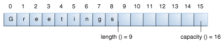

Los objetos
StringBuilder
son como los objetos
String
, exceptoq ue pueden ser modificados. Internamente, estos objetos son tratados como matrices de longitud-
variable que contienen una secuencia de caracteres. En cualquir punto, la longitud y contenido de la secuencia
puede ser cambiado a través de invocaciones a métodos.
Las Strings deben ser usadas siempre a menos que los constructores de cadena ofrecen una ventaja en términos de
código más simple (vea el programa de ejemplo al final de esta sección) o mejor rendimiento. Por ejemplo, si
necesita concatenar un gran número de cadenas, añadirlas a un objeto StringBuilder es más
eficiente.
La clase StringBuilder , como la clase String, tienen un método length()
que devuelve la longitud de la secuencia de caracteres en el constructor.
A diferencia de los strings, cada constructor de cadenas también tiene una capacidad, el número de
espacios de caracteres que han sido asignados. La capacidad, la cual es devuelta por el método
capacity(), es siempre mayor que o igual a la longitud (usualmente mayor que) y se expandirá
automáticamente cuando sea necesario para acomodar añadiduras al constructor de cadenas.
| Constructor | Descripción |
|---|---|
StringBuilder() |
Cre una constructor de cadenas vacío con una capacidad de 16 (16 elementos vacíos). |
StringBuilder(CharSequence cs) |
Construye un constructor de cadenas conteniendo los mismos caracteres que la CharSequence
especificada, más un extra de 16 elementos vacíos al final de la CharSequence.
|
StringBuilder(int initCapacity) |
Crea un constructor de cadenas vacío con la capacidad inicial especificada: |
StringBuilder(String s) |
Crea un constructor de cadenas cuyo valor es inicializado por la cadena especificada, más un extra de 16 elementos vacíos al final de la cadena. |
Por ejemplo, el siguiente código
// crea un constructor vacío, capacidad 16
StringBuilder sb = new StringBuilder();
// añade 9 caracteres al principion
sb.append("Greetings");
produciraá un constructor de cadenas con una longitud de 9 y una capacidad de 16:

La clase StringBuilder tiene algunos métodos relacionados con la longitud y la capacidad que la
la clase String no tiene:
| Método | Descripción |
|---|---|
void setLength(int newLength) |
Establece la longitud de la secuencia de caracteres. Si newLength es menor que
length(), los últimos caracteres en la secuencia de caracteres son truncados. Si
newLength es mayor que length(), se añaden caracteres null al final de la
secuencia de caracteres.
|
void ensureCapacity(int minCapacity)
|
Se asegura que la capacidad sea al menos igual al mínimo especificado. |
Un número de operacioens (por ejemplo, append(), insert(), o setLength())
pueden incrementar la longitud de la secuencia de caracteres en el constructor de cadenas así que la
length() resultante será más grande que la capacity() actual. Cuando esto ocurre, la
capacidad es incrementada automáticamente.
Las principales operaciones sobre un StringBuilder que no están disponibles en
String son los métodos append() e insert(), que están sobrecargados de
forma que aceptan datos de cualquier tipo, Cada uno convierte su argumento a una cadena y entonces añade o
inserta los caracteres de esa cadena a la secuencia de caracteres en el constructor de cadenas. El métood
append siempre añade estos caracteres al final de secuencia de caracteres exitente, mientras que el método
insert añade los caracteres en un punto especificado.
Aqúi ha una serie de métodos de la clase StringBuilder.
| Método | Descripción |
|---|---|
StringBuilder append(boolean b)
|
Añaden el arguemtno a este constructor de cadenas. Los datos son convertidos en una cadena antes de que la operación de añadir tome lugaar. |
StringBuilder delete(int start, int end)
|
El primer método borra la subsecuencia desde start a end-1 (inclusive) en la secuencia de caracteres de
StringBuilder. El segundo método borrar el carácter localizados en el
índice.
|
StringBuilder insert(int offset, boolean b)
|
Inserta el segundo argumento en el constructo de cadenas. El primer argumento entero indica el índice antes del cual los datos van a ser insertados. Los datos son convertidos en una cadena antes de que la operación de insercicón tome lugar. |
StringBuilder replace(int start, int end, String s)
|
Reempalza los caracteres especificados en el constructor de cadenas. |
StringBuilder reverse()
|
Invierte la secuencia de caracteres en este constructor de cadenas. |
String toString() |
Devuelve una cadena que contiene la secuencia de caracteres en el constructor. |
String sobre un objeto
StringBuilder convirtiendo primero el constructor de cadena en un string con el método
toString() de la clase StringBuilder. Entonces convierte la cadena en un cosntructor
de cadenas usando el constructor StringBuilder(String str).
El programa DemoString que fue listado en la sección titutlada "Cadenas" es un ejemplo de
lo que un programa que sería más eficiente si un StringBuilder fuera usado en vez de
String.
StringDemo da la vuelta a un palíndromo. Aquí, una vez de nuevo, está su listado:
public class DemoString {
public static void main(String[] args) {
String palindromo = "Aman a Panamá";
int longitud = palindromo.length();
char[] matrizTmpCars = new char[longitud];
char[] matrizCars = new char[longitud];
// coloco la cadena original en una
// matriz de caracteres
for (int i = 0; i < longitud; i++) {
matrizTmpCars[i] =
palindromo.charAt(i);
}
// invierto la matriz de caracteres
for (int j = 0; j < longitud; j++) {
matrizCars[j] =
matrizTmpCars[longitud - 1 - j];
}
String palindromoInverso =
new String(matrizCars);
System.out.println(palindromoInverso);
}
}
Ejecutar el programa produce esta salida:
ámanaP a namA
Para llevar a cabo la reversión de la cadena, el programa convierte la cadena en una matriz de caracteres
(primer bucle for), invierte la matriz en una segunda matriz (segundo bucle for), y
entonces la convierte de vuelta en una cadena.
Si convierte la cadena palindromo en un consructor de cadenas, puede usar el método
reverse() de la clase StringBuilder. Hace el código más simple y fácil de leer:
public class DemoStringBuilder {
public static void main(String[] args) {
String palindromo = "Aman a Panamá";
StringBuilder sb = new StringBuilder(palindromo);
sb.reverse(); // la revertimos
System.out.println(sb);
}
}
Ejecutar este programa produce la misma salida:
ámanaP a namA
Note que println() imprime un constructor de cadenas, como en:
System.out.println(sb);
porque sb.toString() es llamada implícitamente, como lo es con cualquier otro objeto en una
invocación de println().
StringBuffer que es exactamente la misma
que la clase StringBuilder, excepto que es segura-para-multihilo por la virtud de tener sus métodos
sincronizados. Los hilos serán descritos en la lección sobre concurrencia.